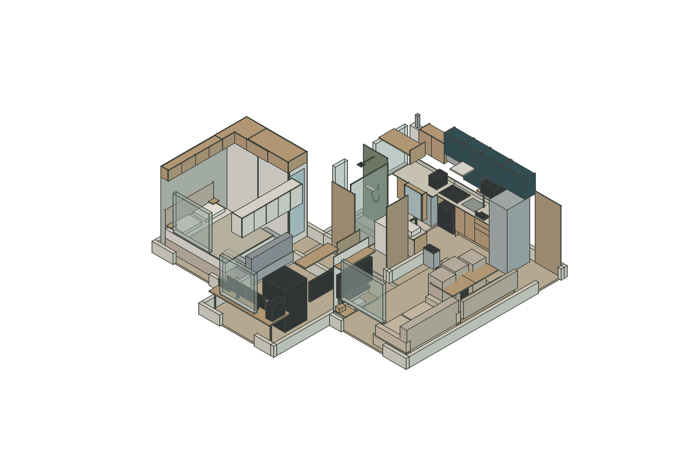
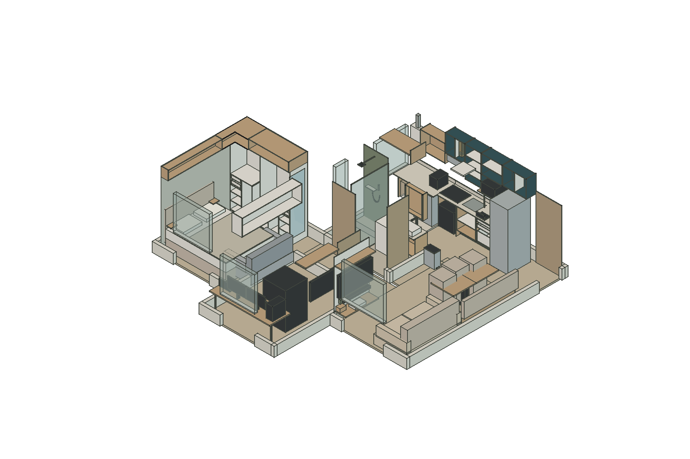
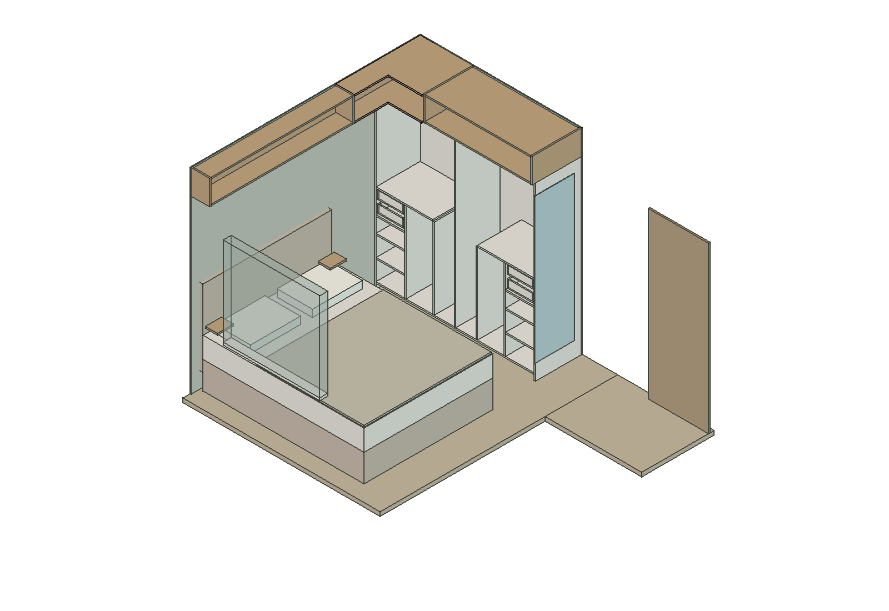
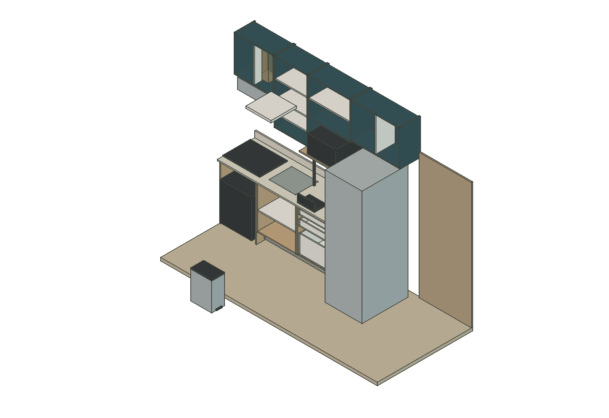
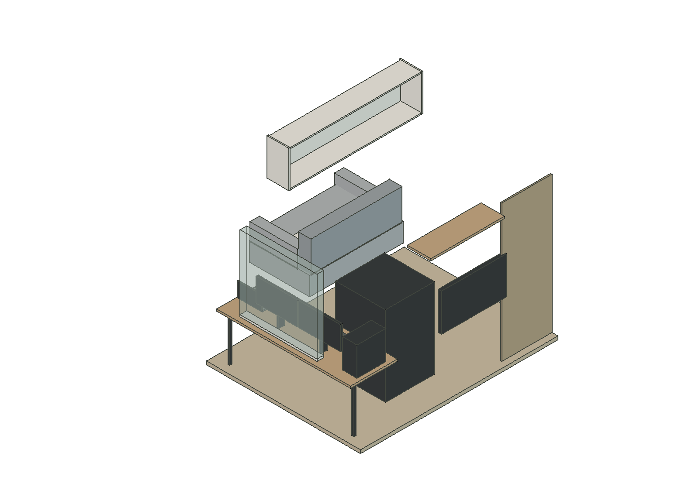
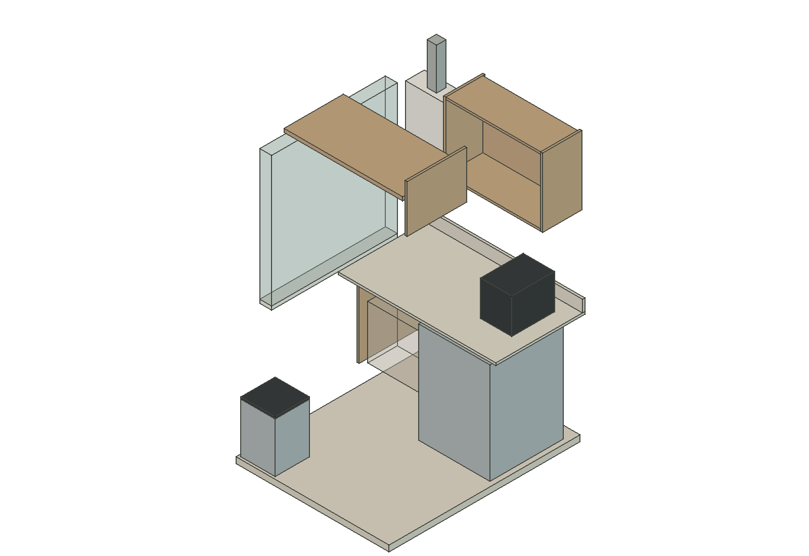
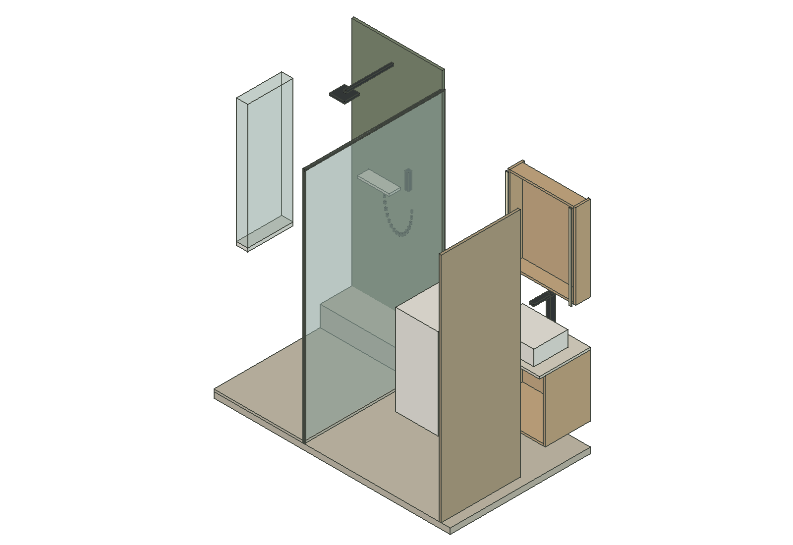
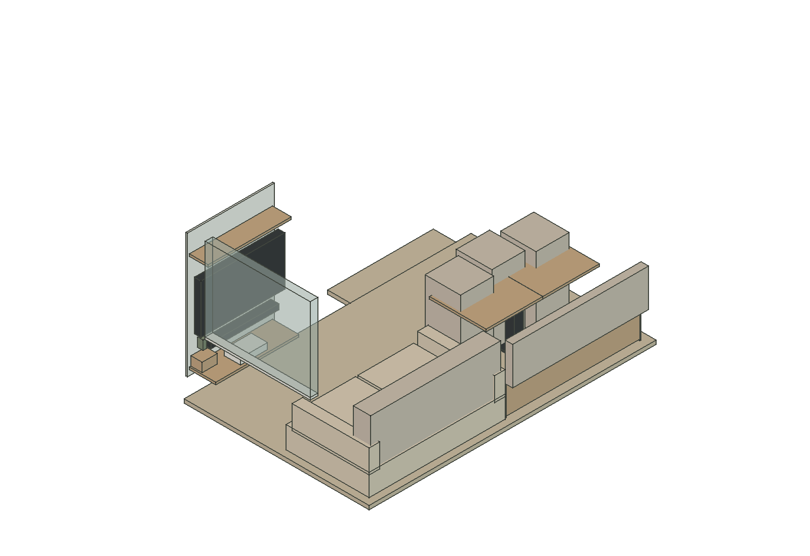

Modelo editável em escala, com 20 módulos de marcenaria e peças separadas. Implantação baseada nos estudos existentes, incorporando as decisões recentes do quarto.
Versão de estudo. Medidas acabadas, ferragens, cargas, recortes, instalações e movimentos simultâneos ainda precisam de detalhamento. O canto articulado do quarto mantém a interferência conhecida da R01 como pendência.

Visão geral com frentes fechadas. Equipamentos e estofados são volumes de referência.

Interiores com as frentes ocultas. Prateleiras, divisórias e caixas de gaveta são objetos separados.

Quarto. Profundidade total 65 cm, organização R02 e aéreos alinhados. Canto integrado ainda em estudo.

Cozinha. G1/G2/G3, gabinete da pia e aéreos A/B/C/D. Hidráulica e ventilação ainda a compatibilizar.

Escritório. Gavetas com caixa de 400 mm e aéreo sobre o sofá.

Lavanderia. Reservas do tanque e cesto, aéreo e chapa do varal.

Banheiro. Caixas de estudo; divisões internas ainda não escolhidas.

Sala e jantar. Banco com setores internos, tampas e almofadas separadas.